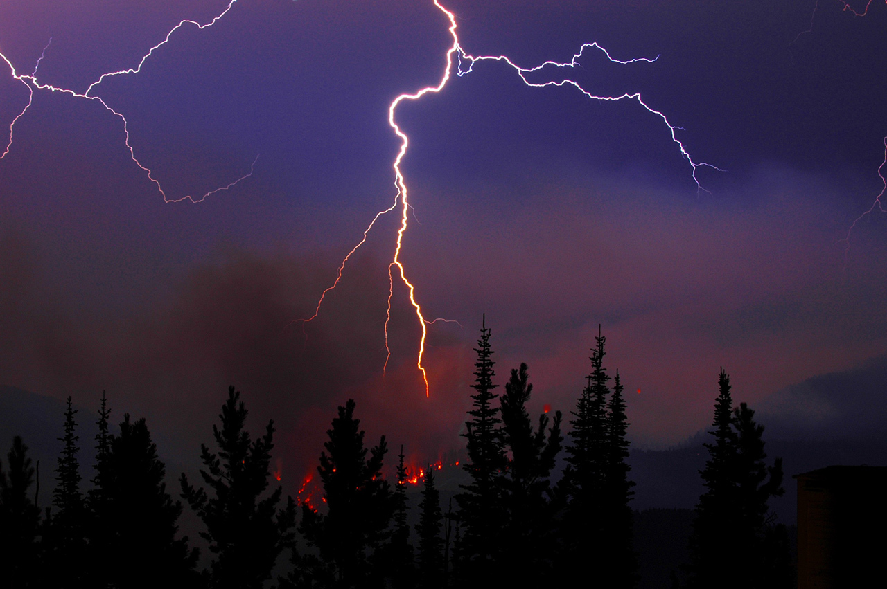

What is a wildfire?
A wildfire or forest fire is an uncontrolled fire that spreads rapidly through vegetation, such as forests or grasslands.
What causes wildfires?
These fires can occur naturally, often ignited by lightning strikes, or they can be caused by human activities, such as campfires, discarded cigarettes, or arson.
Dangers of wildfires

Regardless of the cause, wildfires can spread rapidly under the right conditions, including dry weather, low humidity, and strong winds.
Wildfires can cover thousands of acres and cause extensive damage to property and ecosystems.
They pose significant risks to both human life and the environment.
What to do if you're near a wildfire
In the event of a wildfire, it's crucial to prioritize safety and take immediate action to protect yourself, your loved ones, and your property.
Firstly, stay informed by monitoring local news and authorities for updates on the fire's location, size, and evacuation orders.
If advised to evacuate, do so without delay, following designated evacuation routes and instructions from emergency responders.
Additionally, if you're driving and encounter smoke or flames, turn around and find an alternate route.
Never drive through areas with active fires or heavy smoke, as visibility can be severely impaired and conditions can change rapidly.
Below is an episode of The Employee Safety Podcast by Alert Media which goes further into detail about building a wildfire protection plan.
Read the article which goes alongside the podcast here.